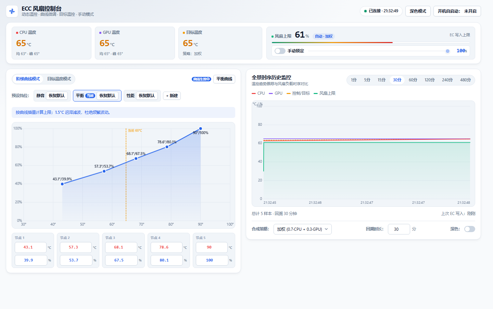

微软 WHCP 签名内核驱动
默认集成 PawnIO 2.x 官方驱动（LpcACPIEC.bin），通过微软官方 WHCP 认证并完美兼容 Windows 核心隔离/内存完整性（HVCI），告别传统 WinRing0 等驱动造成的安全拦截风险。
专为 Windows 笔记本打造的高性能 EC（Embedded Controller）风扇控制器。支持自定义阶梯曲线、自适应闭环目标温度控制、独立分离看门狗守护，搭载现代化双擎控制台，纯 Go 单文件极速运行。

从底层内核驱动通信，到应用层闭环控制算法，打造安全可靠的温控系统。
默认集成 PawnIO 2.x 官方驱动（LpcACPIEC.bin），通过微软官方 WHCP 认证并完美兼容 Windows 核心隔离/内存完整性（HVCI），告别传统 WinRing0 等驱动造成的安全拦截风险。
独创闭环比例控制律（KP + 动态死区 + 升降速率门限），设定如 66°C，控制器自动根据温差微调风扇上限，“放开快、收紧慢”，彻底消除风扇频繁拉高降下的恼人啸叫。
5 控制点线性插值，支持 Canvas 画布拖拽圆点与调音台式输入框毫秒级双向同步。内置前后节点单调递增约束算法，杜绝温度节点交叉引起的逻辑错乱。
全新重塑的并排双引擎 WebUI：左侧风扇调控核心中枢，右侧全景历史时序监控（1–480 分钟自适应抽样，零掉帧无卡顿），集成手动转速快速接管条。
分离的独立守护进程监控主控心跳；若主程序发生崩溃、死锁或被强杀，看门狗在 30 秒心跳超时后自动将 EC 上限重置为 0xFF，无缝退还给主板固件，彻底杜绝过热隐患。
感知原厂 ControlCenter 的 FanControlStatus，原厂激活时主动让渡。CPU≥92°C 或 GPU≥87°C 自动触发两阶段高温硬保护，交还主板全速排热。
每秒采样传感器温度，经由降噪平滑、策略合成与控制门控，安全写入 EC 嵌入式控制器。
通过独立常驻进程桥接 LibreHardwareMonitor 与 GmwmiCli 只读读取 CPU 与 GPU 核心温度，具备指数退避防反复崩溃机制。
加权（0.7·CPU + 0.3·GPU）、取最大值或单路通道合成代表温度。周期内 6 次采样取算术均值，过滤瞬态脉冲噪声。
曲线模式：5 控制点分段插值。
目标模式：偏离误差 × KP 自适应计算，受限于 Min/Max 范围与升降步长限制。
1.5°C 迟滞滤波过滤微小温差抖动；10 秒心跳机制防止固件收回控制权；高温硬保护阈值优先裁决。
通过 WHCP 签名的 PawnIO 设备直接读写 EC 寄存器 0x2C/0x2D，并立即回读 0x2E/0x2F 与 RPM 实际占空比验证。
| 寄存器地址 | 物理功能 | 读写属性 | 数值规范与工程意义 |
|---|---|---|---|
0x2C / 0x2D |
CPU / GPU 风扇占空比上限 | 可读可写 | 写入 0x00–0x64 (0–100%) 为上限；写入 0xFF 立即交还主板 EC 原厂曲线接管 |
0x2E / 0x2F |
EC 实际调控占空比 | 只读 | 主板硬件实际执行的 PWM 占空比（EC 通常以约 10 秒时间常数的阻尼平滑逼近设定的上限值） |
0x58 / 0x59 |
CPU / 拓展硬件传感器温度 | 只读 | 当前 EC 读取到的摄氏度整数，用于高温保护比对与回退传感器核验 |
0xB0 / 0xB1 |
Fan 1 实际物理转速 (RPM) | 只读 | 小端 16 位无符号整数（低字节在 0xB0，高字节在 0xB1），反映真实转速 |
0xB2 / 0xB3 |
Fan 2 实际物理转速 (RPM) | 只读 | 小端 16 位无符号整数（低字节在 0xB2，高字节在 0xB3），反映真实转速 |
根据日常办公、影音娱乐或重度游戏负载，自由选择最契合当前工况的控制策略。
基于 5 个自定义控制点的分段线性插值查表算法，直观可控，符合直觉。
比例控制律 + 死区滤波 + 升降速率限制，算法自动调整转速上限将温度维持在目标值。
desired = Bias + KP × (avg - Target)。UpStep=+30%（放开极速）、DownStep=-10%（收紧极稳）。直接锁定固定的风扇占空比上限，完全绕过任何温度曲线与算法计算。
提供全自动 Windows 安装包与绿色便携版 ZIP 两种发布渠道。
包含静默安装 PawnIO 驱动逻辑与自动计划任务部署，支持覆盖更新与标准控制面板卸载。
ECC-Setup-v2.0.0.exe。%ProgramFiles%\ECC）。适合开发者与排查调试。解压后即可直接运行，依赖文件与驱动均位于当前文件夹。
ecc-v2.0.0-windows-amd64.zip 并解压至任意固定目录。assets/pawnio/PawnIO_setup.exe 安装）。install.ps1（或直接启动 ecc.exe）。http://127.0.0.1:8765。主程序 ecc.exe 支持灵活的命令行启动标志，用于高级配置、测试与后台自动化。
| 参数标志 | 默认取值 | 参数用途与详细说明 |
|---|---|---|
--port |
8765 |
Web 控制台监听端口（只绑定 127.0.0.1 回环地址） |
--interval |
1000 |
温度传感器采样间隔（单位：毫秒，默认每秒 1 次） |
--dry-run |
false |
仅记录 EC 写入日志与换算值，绝不触碰真实底层硬件（安全演练） |
--simulate |
false |
使用内置模拟动态温度引擎测试界面联动（自动附加启用 dry-run） |
--no-pawnio |
false |
强制禁用默认的 PawnIO 驱动后端，改走传统 ec-probe/WinRing0 回退路径 |
--no-tray |
false |
禁用 Windows 系统任务栏托盘图标 |
--no-browser |
false |
程序启动就绪后不自动拉起系统默认浏览器打开控制台 |
--skip-admin |
false |
跳过管理员提权弹窗检查（通常在模拟测试与调试时使用） |
--shutdown |
false |
通过全局 IPC 管道通知当前正在后台运行的实例优雅退出（安装器/卸载器专用） |
关于安全性、驱动认证、硬件兼容性与配置持久化的解答。
完全不需要！在 2.0.0 版本中，默认的 EC 读写后端已经全面升级为 PawnIO 2.x。PawnIO 驱动拥有微软官方 WHCP 签名，100% 兼容 Windows 11 HVCI 内存完整性机制。你可以在完全开启核心隔离的情况下正常稳定运行，绝无任何驱动拦截报错。
这是 ECC 的安全机制设计：如果通过官方安装包安装在 C:\Program Files\ECC 下，由于该目录属于受保护的系统安全路径，开机自启会使用系统计划任务的 HIGHEST 特权级静默启动，免去每次开机点击 UAC 提权；如果安装在非保护目录，开机自启则使用普通用户级任务，登录时程序会请求一次 UAC 确认，杜绝以高权限自启非保护目录的提权安全风险。
绝对不会。ECC 设计了多重冗余安全机制：
0xFF 释放所有控制权，交还给主板 BIOS 原厂风扇曲线。0xFF 释放硬件。在蓝天/神舟等大多数笔记本架构中，EC 寄存器 0x2C/0x2D 的物理意义是风扇占空比上限（Speed Cap）。这意味着：ECC 可以将风扇转速压制到原厂曲线以下以换取静音，但如果主板固件自身的温控规则在当前温度下要求更激进的高转速，由于硬件是“取二者较严格者”，软件上限不会越权强行停转风扇。此外，若当前处于 UpStep/DownStep 降速速率限制中，风扇也会以设定步进缓慢收紧，避免瞬间忽快忽慢。
本项目已在神舟 Hasee QNLXS（i7-12650H + RTX 4060，BIOS SQ131）完成 100% 验证，并适配大多数蓝天（Clevo）及同方公模架构的机型。不同品牌和主板 EC 寄存器定义可能不同。建议未知机型首次运行添加 --simulate 或 --dry-run 启动，并在管理员终端中核验读写响应后再实际接管。
完全不会。本软件为 100% 纯本地离线开源项目，不包含任何云端通信接口、数据收集、遥测探针（Telemetry）或用户账号体系。Web 控制台仅绑定回环地址 127.0.0.1，并具备页面 Session Token 与 Host 白名单防跨域拦截防护，网络绝对安全。